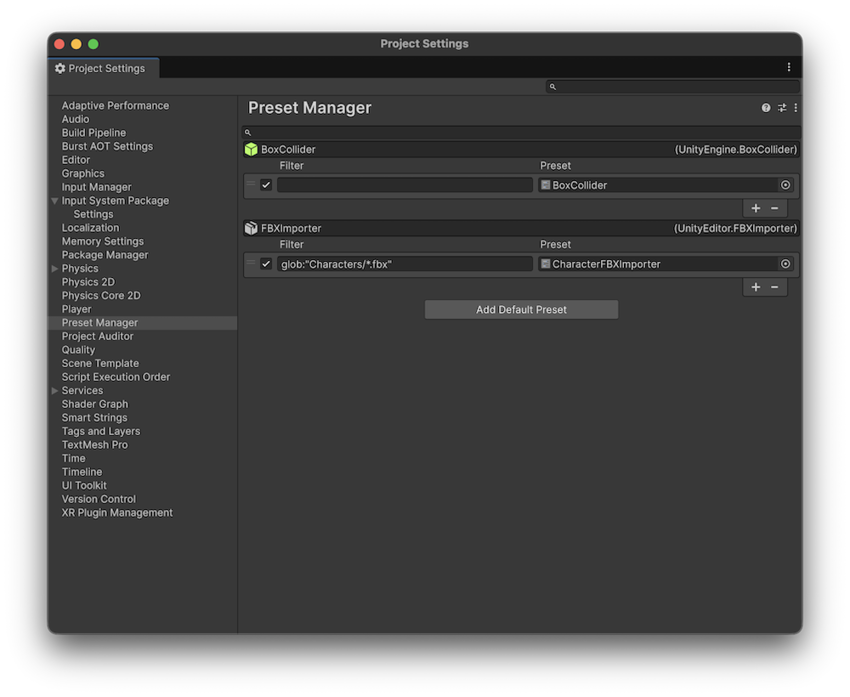
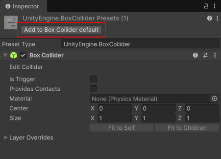

You can configure the Unity Editor to apply preset assets to certain components or importer types by default. To do this, use the Preset Manager Project Settings window.
Unity uses the default presets when creating new components and importing assets, and applies the default presets when you use the Reset command in the component context menu in the Inspector window.
Note: You can’t set the default properties for Project settings, Preferences settings, or built-in assets such as materials, animations, or sprites.
To specify a preset to use for default settings:
To deactivate a default preset, select the checkbox next to the filter.

Note: If you set a default preset for Transform components, Unity doesn’t use the Position values when you create a new GameObject. Instead, it sets the default Position values to the center of the Scene view. To set the Position values to those of the default preset, select the Transform component’s More menu (⋮) and select Reset.
You can also add and remove default presets via the InspectorA Unity window that displays information about the currently selected GameObject, asset or project settings, allowing you to inspect and edit the values. More info
See in Glossary window as follows:
To remove a default preset:

By default, a preset applies to every new component or asset importer of that preset type. If you want to only apply it to specific components or asset types, use the Filter field to define when to apply the preset.
Note: Default presets are applied in order from top to bottom. This means that filters at the bottom of the list can override previous filters.
You can also use glob search to allow for more inclusive import filters. A glob search filter is case-sensitive.
To create a glob search filter, the filter field must begin glob:, and the search term must be in quotation mark characters. For example, glob:"example-folder/*.fbx" filters for any .fbx file in a folder called example-folder. The following table outlines the supported glob syntax:
| Syntax | Description | Example |
|---|---|---|
* |
Match 0 or more characters in part of a single path. |
glob:"foldername/*.fbx" searches for any .fbx file located in a folder named foldername. |
? |
Match 1 character in part of a single path. |
glob:"foldername/filename-?.fbx" searches for any .fbx file located in a folder named foldername that has the name filename- followed by one single character. For example, this includes filename-1.fbx, filename-2.fbx, but not filename-01.fbx. |
[...] |
Match 1 character in the specified range. If the first character of the range is ! or ^ then it matches any character not in the range. |
glob:"foldername/file-[0-9]1.fbx" matches .fbx files located in the folder named foldername where the file name begins with file- and ends with a two-digit number ending in 1. This example matches file-01.fbx, file-11.fbx, and file-21.fbx, but not file-2.fbx, or file-22.fbx. |
(pattern–1|pattern–2|pattern–3) |
Place a search inside parentheses and separate patterns by a vertical pipe to match one or more search patterns. The vertical pipe character denotes or. |
glob:“(foldername/filename-?.fbx|foldername/file-?.fbx)” Matches .fbx files located in the folder named foldername where the file name is either filename- or file- followed by a single character. This example matches filename-1.fbx, file-1.fbx, and file-2.fbx, but not filename-22.fbx, or file-22.fbx. |
** |
Match zero or more folders and subfolders. |
glob:"foldername/**.fbx" matches any .fbx file located in the folder named foldername and its subfolders. |
Note: Unity doesn’t apply default asset importer presets when you select Reimport on an existing asset. To apply presets to assets that have already been imported, use the Reset command in the component’s context menu in the Inspector window.